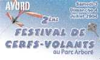
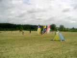
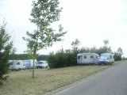
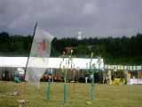
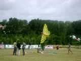
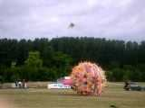
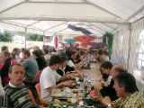
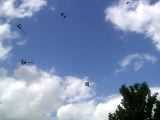
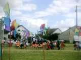
Des sièges sont prévus pour les spectateurs, derrière les moulinets de Joël, maintenant ils connaissent "Vive le vent..." par coeur !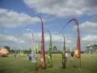
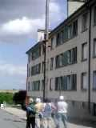
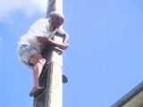
Mais il a encore fallu se dégager de la cheminée suivante, puis de l'antenne de télé collective et musclée, grâce à des manoeuvres de cerfs-volants adroites et obstinées : j'accroche le fil à un autre cerf-volant, je soulève, je vais à droite en lançant le dévidoir par dessus les fils du téléphone, je décroche un peu, je reviens à gauche par la manoeuvre inverse, je redécroche, et miracle, c'est libre et, encore plus fort, on n'a pas accroché le deuxième cerf-volant ! Et pourtant ça ne manquait pas de conseilleurs...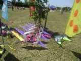
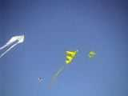
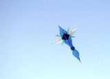
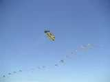
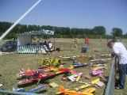
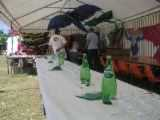
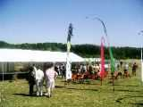
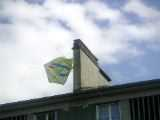
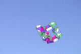
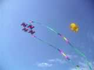
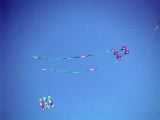
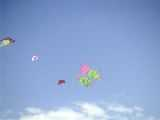
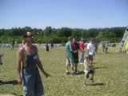
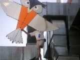
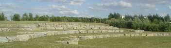